Research Methodology
Our systematic approach to developing the nitrogen detection system
Experimental Framework
Our research adopted a multi-phase experimental methodology to tackle each of the three specific objectives:
CNN Model Development
A DenseNet121 framework was chosen for its effectiveness in feature extraction and transfer learning abilities. The model was trained on a curated dataset of rice leaf photos labeled to four levels of nitrogen deficiency.
Fertilizer Recommendation System
This module converts the output of the CNN classification model into nitrogen application recommendations. Based on the predicted crop condition, it advises farmers on the appropriate amount of nitrogen to apply to their fields.
Mobile Application Development
The app provided a streamlined workflow for farmers to capture leaf images, receive nitrogen status classification and fertilizer recommendations within seconds, optimized for low-end Android phones.
Technology Stack
Python
Primary programming language for model construction due to its mature ecosystem for machine learning libraries.
OpenCV
Used for image preprocessing operations like Contrast Limited Adaptive Histogram Equalization (CLAHE) in LAB color space.
DenseNet121
CNN architecture selected for its compactness, feature reuse, and strong performance with relatively small datasets.
![Flutter]()
Flutter
Framework for cross-platform mobile app development, enabling a single codebase for both Android and iOS.
![Google Colab]()
Google Colab
Cloud-based platform used for model training and experimentation, offering free GPU resources and seamless notebook sharing.
![Flask]()
Flask
Lightweight Python web framework used for backend services before transitioning to fully on-device processing.
Data Collection & Processing
Study Area and Protocols
Data were collected on-site in Sri Lanka's Western Province rice-growing regions, selected for their representative smallholder operations and varied agroecological settings. The sampling strategy used a stratified design to ensure wide coverage across soil types, rice varieties, and growth stages.
Image Dataset
During two growing seasons, researchers collaborated with local growers to obtain 1,000 leaf images with standardized parameters:
- Photos taken mid-morning to avoid harsh midday sun
- Leaves photographed against neutral gray background
- Comprehensive range of nitrogen statuses under different conditions
Preprocessing Pipeline
Images underwent rigorous preprocessing to handle real-world variability:
- Automatic quality checks for focus, exposure, and color balance
- Sharpening of out-of-focus images using custom kernels
- Light normalization using CLAHE in LAB color space
- Resizing to 224×224 pixels for model input
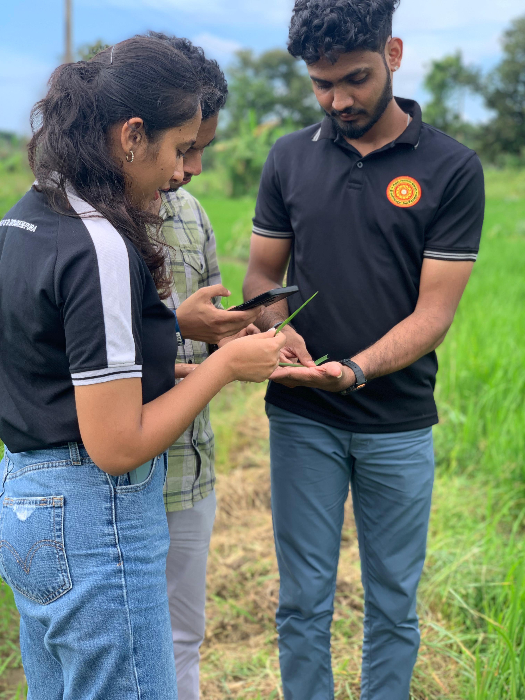
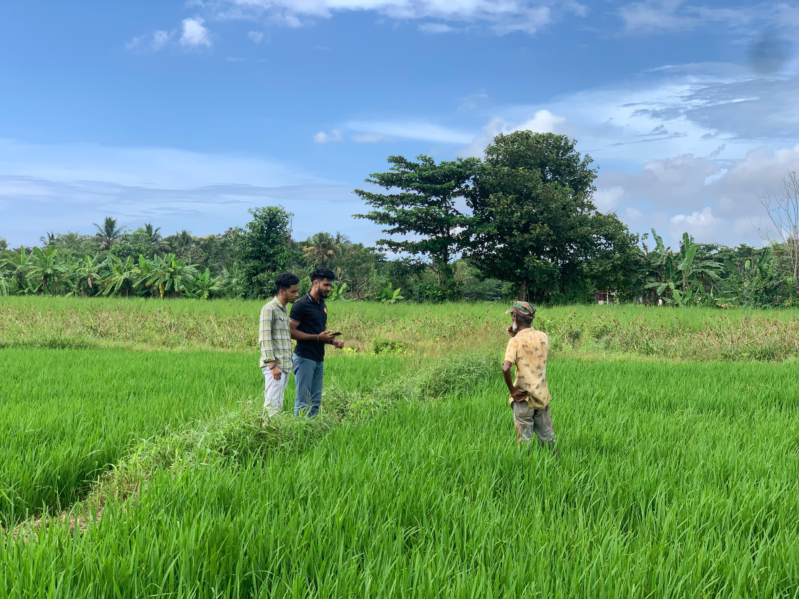
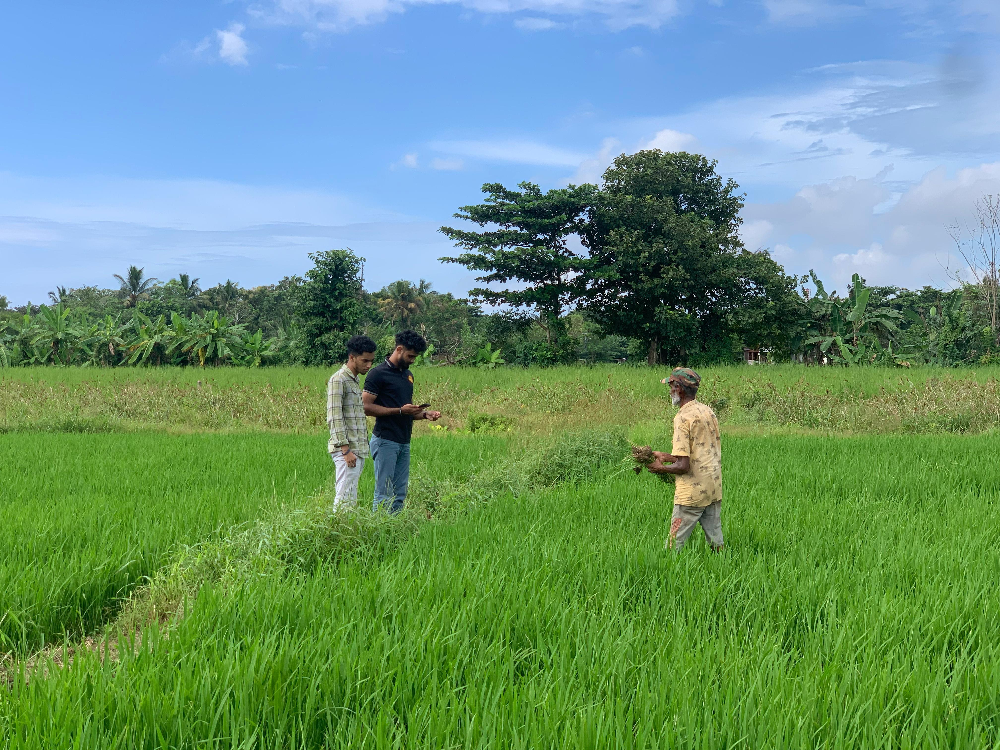
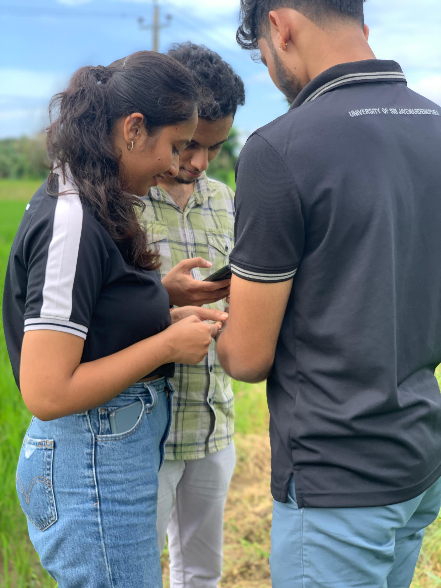
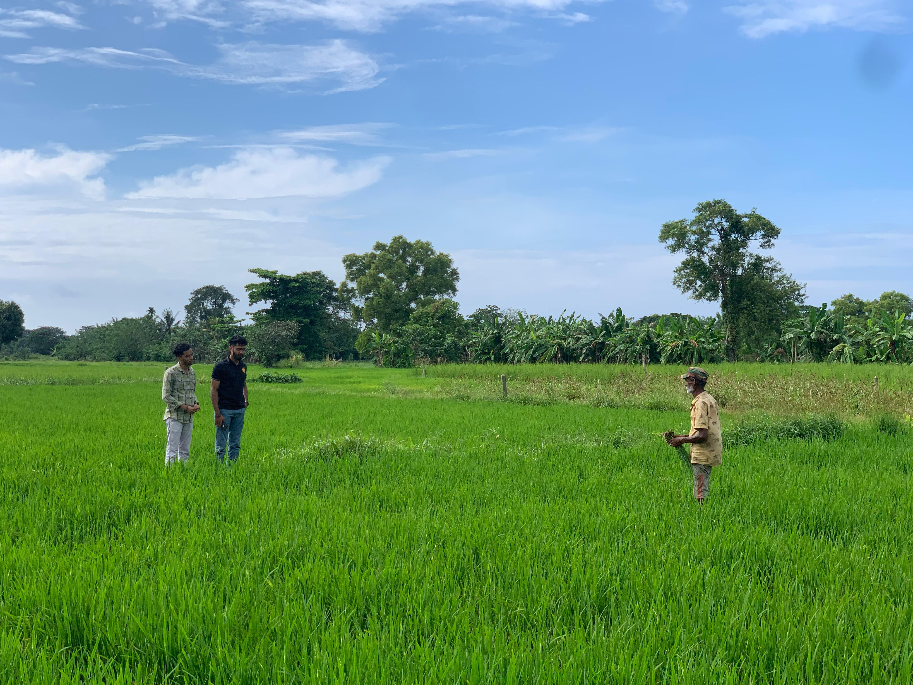
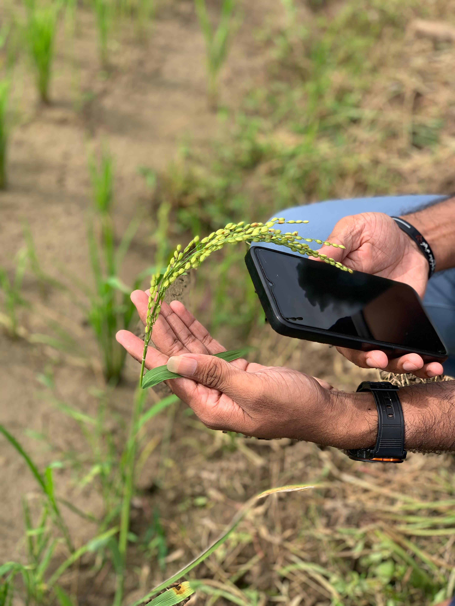
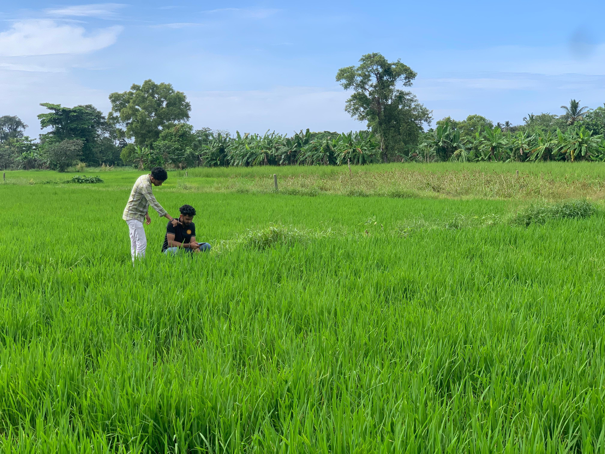
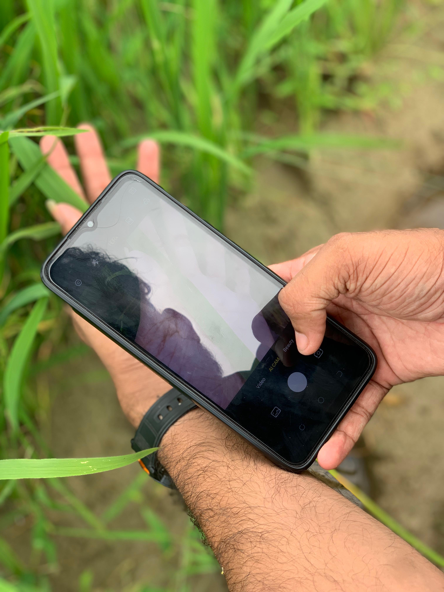
Architecture Diagrams
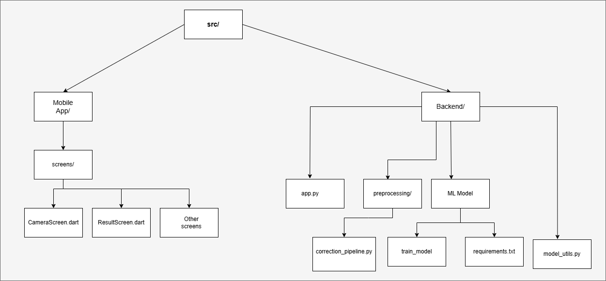
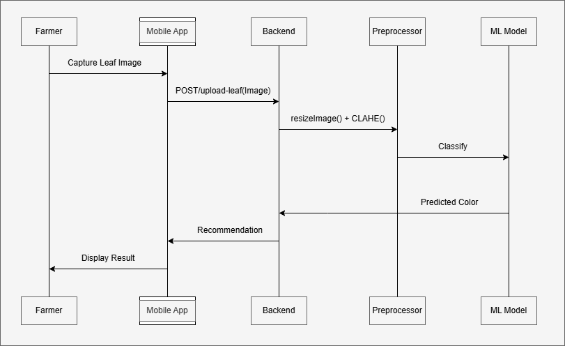
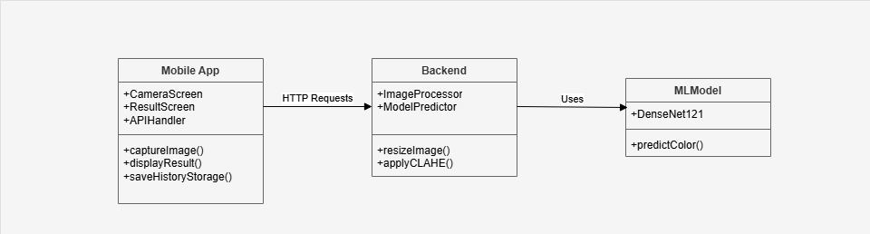
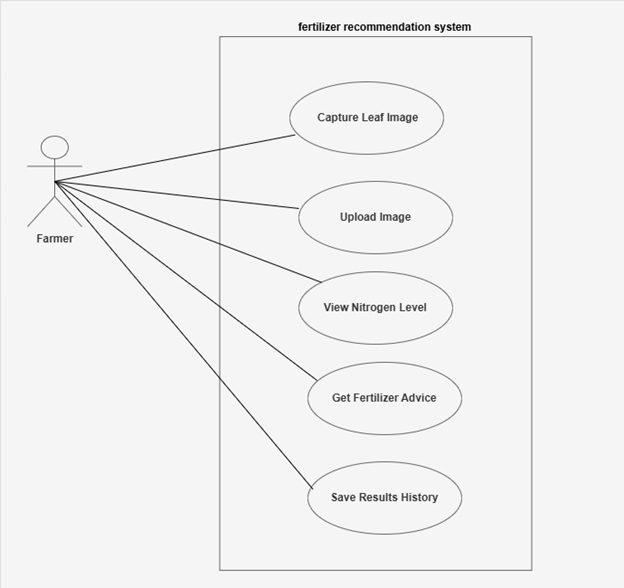
Mobile Application
Built with Flutter framework for cross-platform compatibility and performance on low-end devices. Guides users through image capture and displays results with fertilizer recommendations.
Image Processing
OpenCV-based pipeline handles image quality assessment, sharpening, color space conversion, and CLAHE normalization to prepare images for classification.
Machine Learning Model
Fine-tuned DenseNet121 CNN performs the core classification task, trained on thousands of labeled rice leaf images across different conditions.
Recommendation Engine
Based on the predicted rice leaf color, it advises farmers on the appropriate amount of nitrogen to apply to their fields.